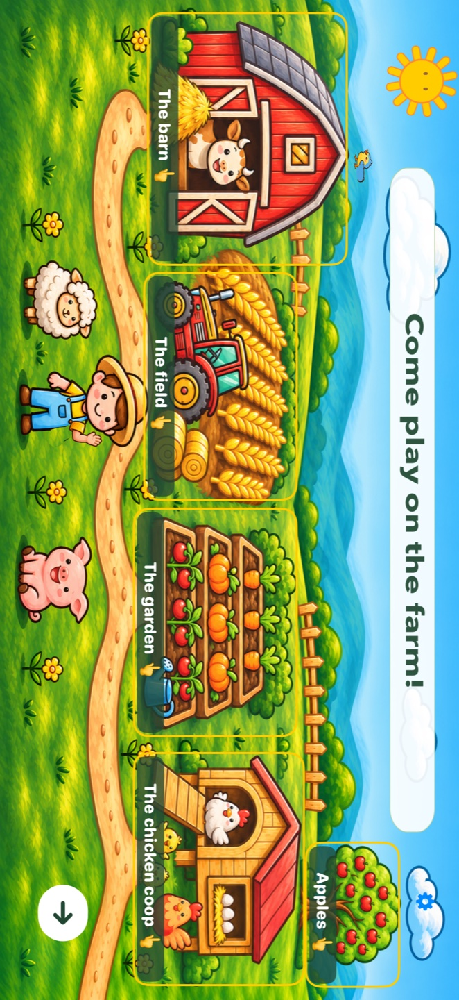
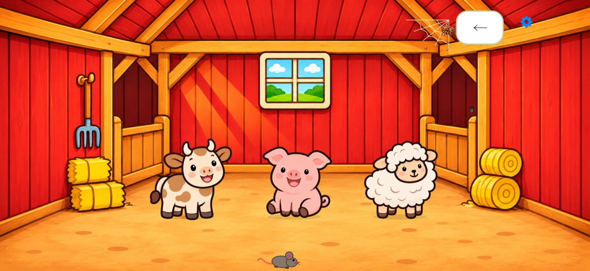
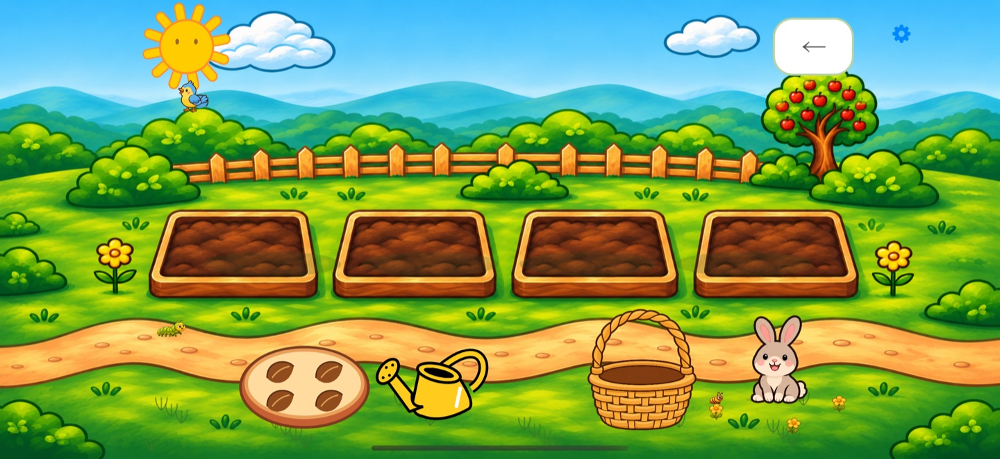
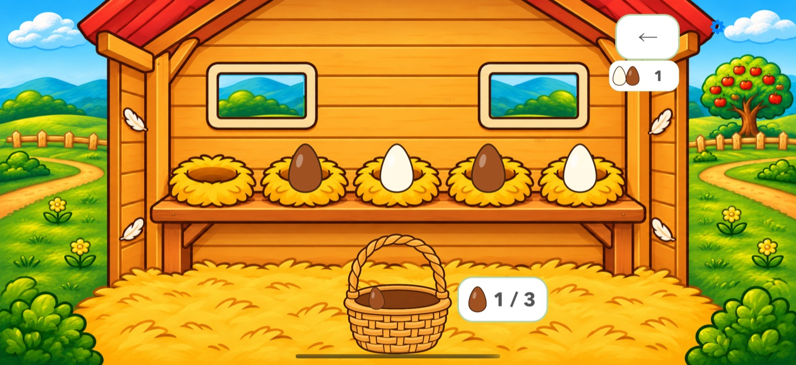
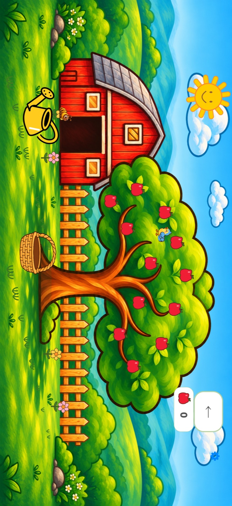
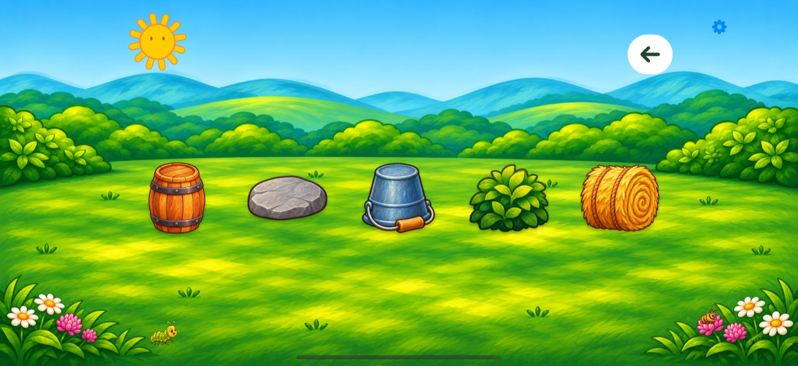
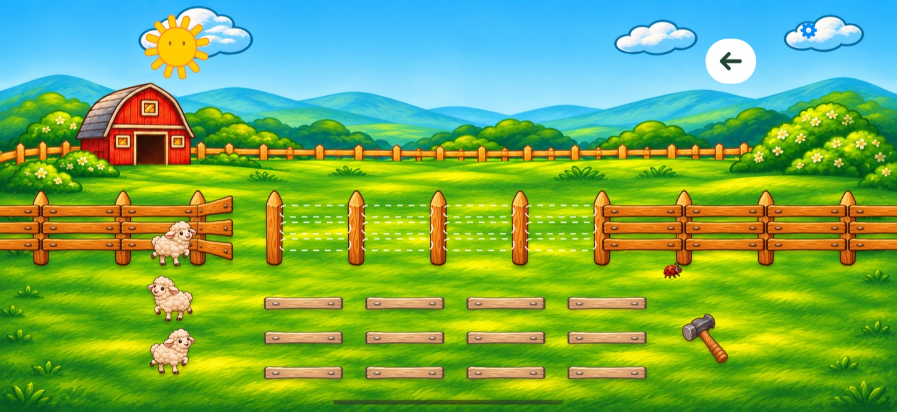
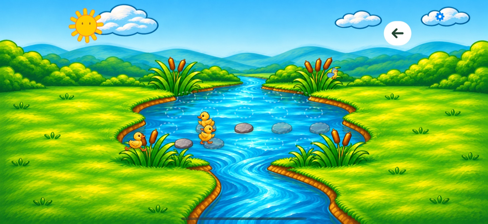
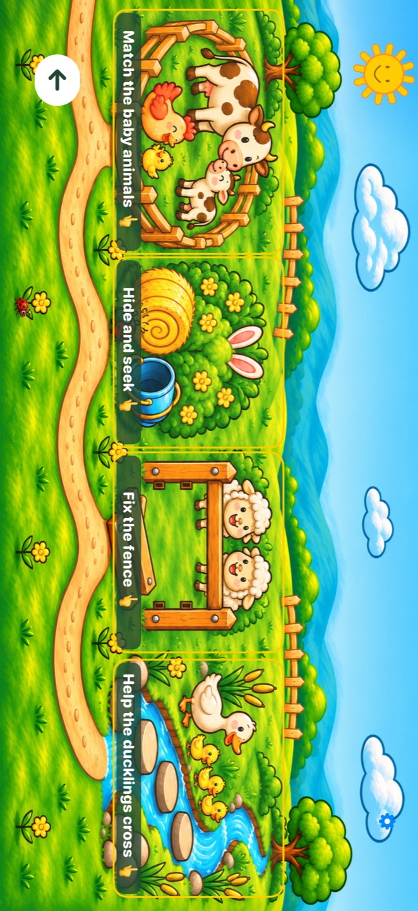

Tractor time
Drive across the field and take the hay bales to the barn.
Ages 3–5 · iPhone and iPad
Drive the tractor, feed the animals and catch apples. Explore eleven farm games in Dutch or English.
See the games
Drive across the field and take the hay bales to the barn.

Choose what each animal likes to eat.

Use a sponge, brush or shower to clean the animals.

Listen to the sound and tap the animal it belongs to.

Plant seeds, water them and harvest your vegetables.

Collect white or brown eggs and listen as they are counted aloud.

Move the basket under the falling apples and water the tree.

Bring each baby animal to its parent.

Find the bunny behind bushes and other hiding places.

Place the planks and hammer in the nails so the lambs can come through.

Place stepping stones in the water and help the ducklings cross.
Swipe east in the game to find four more activities. Watch short clips from the farm below.

All games are ready to play. Dutch and English spoken prompts help your child get started.
The games work offline and contain no ads, accounts, subscriptions or in-app purchases.
Adjust the language, voices, game sounds, music and animal ambience in the parent area.
The app stores language and sound preferences and progress for some games locally.